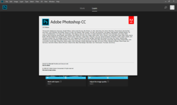

Adobe Photoshop
|  | |
| Developer(s) | Adobe Inc. |
|---|---|
| Initial release | February 19, 1990 |
| Stable release | CC 2019 (20.0.2.22448) (January 10, 2019) [±][1] |
| Operating system | Windows and macOS[2] |
| Platform | x86-64 |
| Available in | 26 languages[3] |
List of languages English (United States), English (United Kingdom), Arabic, Chinese Simplified, Chinese Traditional, Czech, Danish, Dutch, Finnish, French, German, Hebrew, Hungarian, Italian, Japanese, Korean, Norwegian, Polish, Portuguese, Russian, Spanish, Swedish, Romanian, Turkish and Ukrainian | |
| Type | Raster graphics editor |
| License | Trialware, SaaS |
| Website | www |
Adobe Photoshop is a raster graphics editor developed and published by Adobe Inc. for macOS and Windows.
Photoshop was created in 1988 by Thomas and John Knoll. Since then, it has become the de facto industry standard in raster graphics editing, to the point that Photoshop has become a generic trademark leading to its use as a verb such as "to photoshop an image," "photoshopping" and "photoshop contest", though Adobe discourages such use.[4] Photoshop can edit and compose raster images in multiple layers and supports masks, alpha compositing and several color models including RGB, CMYK, CIELAB, spot color and duotone. Photoshop uses its own PSD and PSB file formats to support these features.
In addition to raster graphics, it has limited abilities to edit or render text, vector graphics (especially through clipping path), 3D graphics and video. Photoshop's feature set can be expanded by Photoshop plug-ins, programs developed and distributed independently of Photoshop that can run inside it and offer new or enhanced features.
Photoshop's naming scheme was initially based on version numbers. However, in October 2002, following the introduction of Creative Suite branding, each new version of Photoshop was designated with "CS" plus a number; e.g., the eighth major version of Photoshop was Photoshop CS and the ninth major version was Photoshop CS2. Photoshop CS3 through CS6 were also distributed in two different editions: Standard and Extended. In June 2013, with the introduction of Creative Cloud branding, Photoshop's licensing scheme was changed to that of software as a service rental model and the "CS" suffixes were replaced with "CC". Historically, Photoshop was bundled with additional software such as Adobe ImageReady, Adobe Fireworks, Adobe Bridge, Adobe Device Central and Adobe Camera RAW.
Alongside Photoshop, Adobe also develops and publishes Photoshop Elements, Photoshop Lightroom, Photoshop Express, Photoshop Fix, Photoshop Sketch and Photoshop Mix. Adobe also plans to launch a full-version of Photoshop for the iPad in 2019.[5] Collectively, they are branded as "The Adobe Photoshop Family". It is currently a licensed software.
Contents
- 1 Early history
- 2 File format
- 3 Plugins
- 4 Photoshop tools
- 5 Cultural impact
- 6 Version history
- 7 See also
- 8 References
- 9 Further reading
- 10 External links
Early history[edit]
Photoshop was developed in 1987 by the American brothers Thomas and John Knoll, who sold the distribution license to Adobe Systems Incorporated in 1988. Thomas Knoll, a Ph.D. student at the University of Michigan, began writing a program on his Macintosh Plus to display grayscale images on a monochrome display. This program, called Display, caught the attention of his brother John Knoll, an Industrial Light & Magic employee, who recommended that Thomas turn it into a full-fledged image editing program. Thomas took a six-month break from his studies in 1988 to collaborate with his brother on the program. Thomas renamed the program ImagePro, but the name was already taken.[6] Later that year, Thomas renamed his program Photoshop and worked out a short-term deal with scanner manufacturer Barneyscan to distribute copies of the program with a slide scanner; a "total of about 200 copies of Photoshop were shipped" this way.[7][8]
During this time, John traveled to Silicon Valley and gave a demonstration of the program to engineers at Apple and Russell Brown, art director at Adobe. Both showings were successful, and Adobe decided to purchase the license to distribute in September 1988.[6] While John worked on plug-ins in California, Thomas remained in Ann Arbor writing code. Photoshop 1.0 was released on February 19, 1990 for Macintosh exclusively.[9][10] The Barneyscan version included advanced color editing features that were stripped from the first Adobe shipped version. The handling of color slowly improved with each release from Adobe and Photoshop quickly became the industry standard in digital color editing. At the time Photoshop 1.0 was released, digital retouching on dedicated high-end systems, such as the Scitex, cost around $300 an hour for basic photo retouching.
File format[edit]
| Filename extension | .psd |
|---|---|
| Internet media type | image/vnd.adobe.photoshop |
| Type code | 8BPS |
| Open format? | no |
| Website | www |
Photoshop files have default file extension as .PSD, which stands for "Photoshop Document." A PSD file stores an image with support for most imaging options available in Photoshop. These include layers with masks, transparency, text, alpha channels and spot colors, clipping paths, and duotone settings. This is in contrast to many other file formats (e.g., .JPG or .GIF) that restrict content to provide streamlined, predictable functionality. A PSD file has a maximum height and width of 30,000 pixels, and a length limit of two gigabytes.
Photoshop files sometimes have the file extension .PSB, which stands for "Photoshop Big" (also known as "large document format"). A PSB file extends the PSD file format, increasing the maximum height and width to 300,000 pixels and the length limit to around 4 Exabytes. The dimension limit was apparently chosen arbitrarily by Adobe, not based on computer arithmetic constraints (it is not close to a power of two, as is 30,000) but for ease of software testing. PSD and PSB formats are documented.[11]
Because of Photoshop's popularity, PSD files are widely used and supported to some extent by most competing software. The .PSD file format can be exported to and from Adobe's other apps like Adobe Illustrator, Adobe Premiere Pro, and After Effects.
Plugins[edit]
Photoshop functionality can be extended by add-on programs called Photoshop plugins (or plug-ins). Adobe creates some plugins, such as Adobe Camera Raw, but third-party companies develop most plugins, according to Adobe's specifications. Some are free and some are commercial software. Most plugins work with only Photoshop or Photoshop-compatible hosts, but a few can also be run as standalone applications.
There are various types of plugins, such as filter, export, import, selection, color correction, and automation. The most popular plugins are the filter plugins (also known as a 8bf plugins), available under the Filter menu in Photoshop. Filter plugins can either modify the current image or create content. Below are some popular types of plugins, and some well-known companies associated with them:
- Color correction plugins (Alien Skin Software,[12] Nik Software,[13] OnOne Software,[14] Topaz Labs Software,[15] The Plugin Site,[16] etc.)
- Special effects plugins (Alien Skin Software, Auto FX Software,[17] AV Bros.,[18] Flaming Pear Software,[19] etc.)
- 3D effects plugins (Andromeda Software,[20] Strata,[21] etc.)
Adobe Camera Raw (also known as ACR and Camera Raw) is a special plugin, supplied free by Adobe, used primarily to read and process raw image files so that the resultant images can be processed by Photoshop.[22] It can also be used from within Adobe Bridge.
Photoshop tools[edit]
This section may need to be rewritten entirely to comply with Wikipedia's quality standards. (July 2012) |
Upon loading Photoshop, a sidebar with a variety of tools with multiple image-editing functions appears to the left of the screen. These tools typically fall under the categories of drawing; painting; measuring and navigation; selection; typing; and retouching.[23] Some tools contain a small triangle in the bottom right of the toolbox icon. These can be expanded to reveal similar tools.[24] While newer versions of Photoshop are updated to include new tools and features, several recurring tools that exist in most versions are discussed below.
Pen tool[edit]
Photoshop includes a few versions of the pen tool. The pen tool creates precise paths that can be manipulated using anchor points. The free form pen tool allows the user to draw paths freehand, and with the magnetic pen tool, the drawn path attaches closely to outlines of objects in an image, which is useful for isolating them from a background.
Clone Stamp Tool[edit]
The Clone Stamp tool duplicates one part of an image to another part of the same image by way of a brush. The duplication is either in full or in part depending on the mode. The user can also clone part of one layer to another layer. The Clone Stamp tool is useful for duplicating objects or removing a defect in an image.[25]
Shape tools[edit]
Photoshop provides an array of shape tools including rectangles, rounded rectangles, ellipses, polygons and lines. These shapes can be manipulated by the pen tool, direct selection tool etc. to make vector graphics.
[edit]
The eyedropper tool selects a color from an area of the image that is clicked, and samples it for future use.[23] The hand tool navigates an image by moving it in any direction, and the zoom tool enlarges the part of an image that is clicked on, allowing for a closer view.[23]
Selection tools[edit]
Selection tools are used to select all or any part of a picture to perform cut, copy, edit, or retouching operations.
Cropping[edit]
The crop tool can be used to select a particular area of an image and discard the portions outside the chosen section. This tool assists in creating a focus point on an image and unnecessary or excess space.[26] Cropping allows enhancement of a photo's composition while decreasing the file size. The "crop" tool is in the tools palette, which is located on the right side of the document. By placing the cursor over the image, the user can drag the cursor to the desired area. Once the Enter key is pressed, the area outside the rectangle will be cropped. The area outside the rectangle is the discarded data, which allows for the file size to be decreased.[27] The "crop" tool can alternatively be used to extend the canvas size by clicking and dragging outside the existing image borders.
Slicing[edit]
The "slice" and slice select tools, like the crop tool, are used in isolating parts of images. The slice tool can be used to divide an image into different sections, and these separate parts can be used as pieces of a web page design once HTML and CSS are applied.[28] The slice select tool allows sliced sections of an image to be adjusted and shifted.
Moving[edit]
The move tool can be used to drag the entirety of a single layer or more if they are selected. Alternatively, once an area of an image is highlighted, the move tool can be used to manually relocate the selected piece to anywhere on the canvas.[23]
Marquee[edit]
The marquee is a tool that can make selections that are single row, single column, rectangular and elliptical.[23] An area that has been selected can be edited without affecting the rest of the image. This tool can also crop an image; it allows for better control. In contrast to the crop tool, the "marquee" tool allows for more adjustments to the selected area before cropping. The only marquee tool that does not allow cropping is the elliptical. Although the single row and column marquee tools allow for cropping, they are not ideal, because they only crop a line. The rectangular marquee tool is the preferred option. Once the tool has been selected, dragging the tool across the desired area will select it. The selected area will be outlined by dotted lines, referred to as "marching ants". To set a specific size or ratio, the tool option bar provides these settings. Before selecting an area, the desired size or ratio must be set by adjusting the width and height. Any changes such as color, filters, location, etc. should be made before cropping. To crop the selection, the user must go to image tab and select crop.[29]
Lasso[edit]
The lasso tool is similar to the "marquee" tool, however, the user can make a custom selection by drawing it freehand.[23] There are three options for the "lasso" tool – regular, polygonal, and magnetic. The regular "lasso" tool allows the user to have drawing capabilities. Photoshop will complete the selection once the mouse button is released. The user may also complete the selection by connecting the end point to the starting point. The "marching ants" will indicate if a selection has been made. The "polygonal lasso" tool will draw only straight lines, which makes it an ideal choice for images with many straight lines. Unlike the regular "lasso" tool, the user must continually click around the image to outline the shape. To complete the selection, the user must connect the end point to the starting point just like the regular lasso tool. "Magnetic lasso" tool is considered the smart tool. It can do the same as the other two, but it can also detect the edges of an image once the user selects a starting point. It detects by examining the color pixels as the cursor move over the desired area. Closing the selection is the same as the other two, which should also should display the "marching ants" once the selection has been closed.[30]
The quick selection tool selects areas based on edges, similarly to the magnetic lasso tool. The difference between this tool and the lasso tool is that there is no starting and ending point. For this reason, the selected area can be added onto as much as possible without starting over. By dragging the cursor over the desired area, the quick selection tool detects the edges of the image. The "marching ants" allow the user to know what is currently being selected. Once the user is done, the selected area can be edited without affecting the rest of the image. One of the features that makes this tool especially user friendly is that the SHIFT key is not needed to add more to the selection; by default, extra mouse clicks will be added to the selection rather than creating a new selection.[31]
Magic wand[edit]
The magic wand tool selects areas based on pixels of similar values. One click will select all neighboring pixels of similar value within a tolerance level set by the user. If the eyedropper tool is selected in the options bar, then the magic wand can determine the value needed to evaluate the pixels; this is based on the sample size setting in the eyedropper tool. This tool is inferior to the quick selection tool which works much the same but with much better results and more intuitive controls. The user must decide what settings to use or if the image is right for this tool.[32]
Eraser[edit]
The Eraser tool erases content based on the active layer. If the user is on the text layer, then any text across which the tool is dragged will be erased. The eraser will convert the pixels to transparent, unless the background layer is selected. The size and style of the eraser can be selected in the options bar. This tool is unique in that it can take the form of the paintbrush and pencil tools. In addition to the straight eraser tool, there are two more available options – background eraser and magic eraser. The background eraser deletes any part of the image that is on the edge of an object. This tool is often used to extract objects from the background. The magic eraser tool deletes based on similar colored pixels. It is very similar to the magic wand tool. This tool is ideal for deleting areas with the same color or tone that contrasts with the rest of the image.[33]
Video editing[edit]
In Adobe CS5 Extended edition, video editing is comprehensive and efficient with a broad compatibility of video file formats such as MOV, AVI and MPEG-4 formats and easy workflow. Using simple combinations of keys video layers can easily be modified, with other features such as adding text and creating animations using single images.[34]
3D extrusion[edit]
With the Extended version of Photoshop CS5, 2D elements of an artwork can easily become three-dimensional with the click of a button. Extrusions of texts, an available library of materials for three-dimensional, and even wrapping two-dimensional images around 3D geometry.[34]
Mobile integration[edit]
Third-party plugins have also been added to the most recent version of Photoshop where technologies such as the iPad have integrated the software with different types of applications. Applications like the Adobe Eazel painting app allows the user to easily create paintings with their fingertips and use an array of different paint from dry to wet in order to create rich color blending.[35] In October 2018, it was announced that the full Photoshop engine will be released for iPad next year. The program will feature cloud syncing with other devices and a simpler interface than the desktop version.[36]
Camera Raw[edit]
With the Camera Raw plug-in, raw images can be processed without the use of Adobe Photoshop Lightroom, along with other image file formats such as JPEG, TIFF, or PNG. The plug-in allows users to remove noise without the side-effect of over-sharpening, add grain, and even perform post-crop vignetting.[34]
3D printing tools[edit]
From version 14.1, users can create and edit designs for 3D printing. Artists can add color, adjust the shape or rotate the angles of imported models, or design original 3D models from scratch.[37]
Color replacement tool[edit]
The Color Replacement Tool allows the user to change the color, while maintaining the highlights and shadows of the original image, of pieces of the image. By selecting Brushs and right clicking, the Color Replacement Tool is the third option down. What is important to note with this tool is the foreground color. The foreground color is what will be applied when painting along the chosen part of the image with the Color Replacement tool.
Cultural impact[edit]
Photoshop and derivatives such as Photoshopped (or just Shopped) have become verbs that are sometimes used to refer to images edited by Photoshop,[38] or any image manipulating program. Such derivatives are discouraged by Adobe[4] because, in order to maintain validity and protect the trademark from becoming generic, trademarks must be used as proper nouns.
Version history[edit]
Older versions[edit]
This section needs expansion. You can help by adding to it. (February 2013) |
Photoshop's naming scheme was initially based on version numbers. Adobe published thirteen versions (major and minor changes) before the October 2003 introduction of Creative Suite branding. In February 2013 Adobe donated the source code of the 1990 1.0.1 version of Photoshop to the Computer History Museum.[39][40]
CS[edit]
The first Photoshop CS was commercially released in October 2003 as the eighth major version of Photoshop. Photoshop CS increased user control with a reworked file browser augmenting search versatility, sorting and sharing capabilities and the Histogram Palette which monitors changes in the image as they are made to the document. Match Color was also introduced in CS, which reads color data to achieve a uniform expression throughout a series of pictures.[41]
CS2[edit]
Photoshop CS2, released in May 2005, expanded on its predecessor with a new set of tools and features. It included an upgraded Spot Healing Brush, which is mainly used for handling common photographic problems such as blemishes, red-eye, noise, blurring and lens distortion. One of the most significant inclusions in CS2 was the implementation of Smart Objects, which allows users to scale and transform images and vector illustrations without losing image quality, as well as create linked duplicates of embedded graphics so that a single edit updates across multiple iterations.[42]
Adobe responded to feedback from the professional media industry by implementing non-destructive editing as well as the producing and modifying of 32-Bit High Dynamic Range (HDR) images, which are optimal for 3D rendering and advanced compositing. FireWire Previews could also be viewed on a monitor via a direct export feature.[42]
Photoshop CS2 brought the Vanishing Point and Image Warping tools.[42] Vanishing Point makes tedious graphic and photo retouching endeavors much simpler by letting users clone, paint and transform image objects while maintaining visual perspective. Image Warping makes it easy to digitally distort an image into a shape by choosing on-demand presets or by dragging control points.[42]
The File Browser was upgraded to Adobe Bridge, which functioned as a hub for productivity, imagery and creativity, providing multi-view file browsing and smooth cross-product integration across Adobe Creative Suite 2 software.[42] Adobe Bridge also provided access to Adobe Stock Photos, a new stock photography service that offered users one-stop shopping across five elite stock image providers to deliver high-quality, royalty-free images for layout and design.
Camera Raw version 3.0 was a new addition in CS2, and it allowed settings for multiple raw files to be modified simultaneously. In addition, processing multiple raw files to other formats including JPEG, TIFF, DNG or PSD, could be done in the background without executing Photoshop itself.[42]
Photoshop CS2 brought a streamlined interface, making it easier to access features for specific instances. In CS2 users were also given the ability to create their own custom presets, which was meant to save time and increase productivity.[42]
CS2 activation servers' shutdown: In January 2013, Adobe Photoshop CS2 (9.0), with some other CS2 products, was released with an official serial number, due to the technical glitch in Adobe's CS2 activation servers (see Creative Suite 1 and 2).
CS3[edit]
CS3 improves on features from previous versions of Photoshop and introduces new tools. One of the most significant is the streamlined interface which allows increased performance, speed, and efficiency. There is also improved support for Camera RAW files which allow users to process images with higher speed and conversion quality. CS3 supports over 150 RAW formats as well as JPEG, TIFF and PDF.[43] Enhancements were made to the Black and White Conversion, Brightness and Contrast Adjustment and Vanishing Point Module tools. The Black and White adjustment option improves control over manual grayscale conversions with a dialog box similar to that of Channel Mixer. There is more control over print options and better management with Adobe Bridge. The Clone Source palette is introduced, adding more options to the clone stamp tool. Other features include the nondestructive Smart Filters, optimizing graphics for mobile devices,[44] Fill Light and Dust Busting tools.[43] Compositing is assisted with Photoshop's new Quick Selection and Refine Edge tools and improved image stitching technology.[45]
CS3 Extended includes everything in CS3 and additional features. There are tools for 3D graphic file formats, video enhancement and animation, and comprehensive image measurement and analysis tools with DICOM file support.[46] The 3D graphic formats allow 3D content to be incorporated into 2D compositions. As for video editing, CS3 supports layers and video formatting so users can edit video files per frame.[43]
CS3 and CS3 Extended were released in April 2007 to the United States and Canada. They were also made available through Adobe's online store and Adobe Authorized Resellers. Both CS3 and CS3 Extended are offered as either a stand-alone application or feature of Adobe Creative Suite. The price for CS3 is US$649 and the extended version is US$999. Both products are compatible with Intel-based Macs and PowerPCs, supporting Windows XP and Windows Vista.[43] CS3 is the first release of Photoshop that will run natively on Macs with Intel processors: previous versions can only run through the translation layer Rosetta, and will not run at all on Macs running Mac OS X 10.7 or later.
CS4[edit]
CS4 features smoother panning and zooming, allowing faster image editing at a high magnification. The interface is more simplified with its tab-based interface[47] making it cleaner to work with. Photoshop CS4 features a new 3D engine allowing the conversion of gradient maps to 3D objects, adding depth to layers and text, and getting print-quality output with the new ray-tracing rendering engine. It supports common 3D formats; the new Adjustment and Mask Panels; Content-aware scaling (seam carving[48]); Fluid Canvas Rotation and File display options.[49] The Content-aware scaling allows users to intelligently size and scale images, and the Canvas Rotation tool makes it easier to rotate and edit images from any angle.[47]
Adobe released Photoshop CS4 Extended, which has the features of Adobe Photoshop CS4, plus capabilities for scientific imaging, 3D, motion graphics, accurate image analysis and high-end film and video users. The faster 3D engine allows users to paint directly on 3D models, wrap 2D images around 3D shapes and animate 3D objects.[47] As the successor to Photoshop CS3, Photoshop CS4 is the first x64 edition of Photoshop on consumer computers for Windows.[50] The color correction tool has also been improved significantly.[47]
CS4 and CS4 Extended were released on October 15, 2008. They were also made available through Adobe's online store and Adobe Authorized Resellers. Both CS4 and CS4 Extended are offered as either a stand-alone application or feature of Adobe Creative Suite. The price for CS4 is US$699 and the extended version is US$999. Both products are compatible with Intel-based Mac OS X and PowerPCs, supporting Windows XP and Windows Vista.[47]
CS5[edit]
Photoshop CS5 was launched on April 12, 2010.[51] In a video posted on its official Facebook page, the development team revealed the new technologies under development, including three-dimensional brushes and warping tools.[52]
In May 2011, Adobe Creative Suite 5.5 (CS5.5) was released, with new versions of some of the applications. Its version of Photoshop, 12.1, is identical to the concurrently released update for Photoshop CS5, version 12.0.4, except for support for the new subscription pricing that was introduced with CS5.5.[53]
CS5 introduces new tools such as the Content-Aware Fill, Refine Edge, Mixer Brush, Bristle Tips and Puppet Warp. The community also had a hand in the additions made to CS5 as 30 new features and improvements were included by request. These include automatic image straightening, the Rule-of-Thirds cropping tool, color pickup, and saving a 16-bit image as a JPEG. Another feature includes the Adobe Mini Bridge, which allows for efficient file browsing and management.[54]
CS5 Extended includes everything in CS5 plus features in 3D and video editing. A new materials library was added, providing more options such as Chrome, Glass, and Cork. The new Shadow Catcher tool can be used to further enhance 3D objects. For motion graphics, the tools can be applied to over more than one frame in a video sequence.[54]
CS5 and CS5 Extended were made available through Adobe's online store, Adobe Authorized Resellers and Adobe direct sales. Both CS5 and CS5 Extended are offered as either a stand-alone application or a feature of Adobe Creative Suite 5. The price for CS5 is US$699 and the extended version is US$999.[54] Both products are compatible with Intel-based Mac OS X and Windows XP, Windows Vista, and Windows 7.[55]
CS6[edit]
Photoshop CS6, released in May 2012, added new creative design tools and provided a redesigned interface[56] with a focus on enhanced performance. New features have been added to the Content-Aware tool such as the Content-Aware Patch and Content-Aware Move.[57]
Adobe Photoshop CS6 brought a suite of tools for video editing. Color and exposure adjustments, as well as layers, are among a few things that are featured in this new editor. Upon completion of editing, the user is presented with a handful of options of exporting into a few popular formats.[58]
CS6 brings the "straighten" tool to Photoshop, where a user simply draws a line anywhere on an image, and the canvas will reorient itself so that the line drawn becomes horizontal, and adjusts the media accordingly. This was created with the intention that users will draw a line parallel to a plane in the image, and reorient the image to that plane to more easily achieve certain perspectives.[58]
CS6 allows background saving, which means that while another document is compiling and archiving itself, it is possible to simultaneously edit an image. CS6 also features a customizable auto-save feature, preventing any work from being lost.[58]
The price for CS6 is US$699 and the extended version is US$999. Students, however, even those who are homeschooled, can receive a significant discount on Photoshop.[59]
With version 13.1.3, Adobe dropped support for Windows XP (including Windows XP Professional x64 Edition); thus, the last version that works on Windows XP is 13.0.1. Adobe also announced that CS6 will be the last suite sold with perpetual licenses in favor of the new Creative Cloud subscriptions, though they will continue to provide OS compatibility support as well as bug fixes and security updates as necessary.[60]
Starting January 09, 2017, CS6 is no longer available for purchase, making a Creative Cloud license the only purchase option going forward.[61]
CC[edit]
Photoshop CC (14.0) was launched on June 18, 2013. As the next major version after CS6, it is only available as part of a Creative Cloud subscription, the full version of which costs $49 every month. Major features in this version include All-new Smart Sharpen, Intelligent Upsampling, and Camera Shake Reduction for reducing blur caused by camera shake. Editable Rounded Rectangles and an update to Adobe Camera Raw (8.0) were also included.[62]
Since the initial launch, Adobe has released two additional feature-bearing updates. The first, version 14.1, was launched on September 9, 2013. The major features in this version were Adobe Generator, a Node.js-based platform for creating plug-ins for Photoshop. Photoshop 14.1 shipped with two plug-ins, one to automatically generate image assets based on an extension in the layer name, and another to automatically generate assets for Adobe Edge Reflow.[63]
Version 14.2 was released on January 15, 2014. Major features include Perspective Warp, Linked Smart Objects, and 3D Printing support.[64]
CC 2014[edit]
Photoshop CC 2014 (15.0) was released on June 18, 2014. CC 2014 features improvements to content-aware tools, two new blur tools (spin blur and path blur) and a new focus mask feature that enables the user to select parts of an image based on whether they are in focus or not. Other minor improvements have been made, including speed increases for certain tasks.[65][66]
CC 2015[edit]
Photoshop CC 2015 was released on June 15, 2015. Adobe added various creative features including Adobe Stock, which is a library of custom stock images. It also includes and have the ability to have more than one layer style.[67] For example, in the older versions of Photoshop, only one shadow could be used for a layer but in CC 2015, up to ten are available. Other minor features like Export As, which is a form of the Save For Web in CC 2014 were also added. The updated UI as of November 30, 2015 delivers a cleaner and more consistent look throughout Photoshop, and the user can quickly perform common tasks using a new set of gestures on touch-enabled devices like Microsoft Surface Pro.[68] CC 2015 also marks the 25th anniversary of Photoshop.[69]
CC 2017[edit]
Photoshop CC 2017 was released on November 2, 2016. It introduced a new template selector when creating new documents, the ability to search for tools, panels and help articles for Photoshop, support for SVG OpenType fonts and other small improvements. In December 2016, a minor update was released to include support for the MacBook Pro Touch Bar.
CC 2018[edit]
Photoshop CC 2018 was released on October 18, 2017. It featured an overhaul to the brush organization system, allowing for more properties (such as color and opacity) to be saved per-brush and for brushes to be categorized in folders and sub-folders. It also added brush stroke smoothing, and over 1000 brushes created by Kyle T. Webster (following Adobe's acquisition of his website, KyleBrush.com[70]). A Curvature Pen tool, similar to the one in Illustrator, was added, allowing for faster creation of Bézier paths. Other additions were Lightroom Photo access, Variable font support, select subject, copy-paste layers, enhanced tooltips, 360 panorama and HEIF support, PNG compression, increased maximum zoom level, algorithm improvements to Face-aware and selection tools, color and luminance range masking, improved image resizing, and performance improvements to file opening, filters, and brush strokes.[71]
Photoshop Mix[edit]
This section needs expansion. You can help by adding to it. (June 2012) |
Photoshop Mix is an application designed as a replacement for Photoshop Touch specifically for tablets and touchscreen devices. It includes many of the features of the personal computer version, including layers, selection tools, adjustments, and filters. Edited files could be synced with Adobe Creative Cloud. Photoshop Mix is available on iOS and Android. It has 2 siblings, Photoshop Fix (a Photo Correction app), and Photoshop Sketch (a light drawing tool). All require iOS 9.0 or later. Android versions could be installed on any Android handset (4.0 and up) and tablets (3.1 and up).[72]
See also[edit]
References[edit]
- ^ "Fixed issues in Adobe Photoshop CC". helpx.adobe.com.
- ^ "Photoshop system requirements". Adobe Inc. Retrieved January 10, 2019.
- ^ "language versions | Adobe Photoshop CS6". Adobe.com. Retrieved February 29, 2012.
- ^ a b "PROPER USE OF THE PHOTOSHOP TRADEMARK".
- ^ Phelan, David (July 13, 2018). "Adobe: Photoshop For iPad Is Coming, Product VP Reveals In Interview". Forbes. Retrieved July 21, 2018.
- ^ a b Schewe, Jeff (2000). "Thomas & John Knoll". PhotoshopNews. Archived from the original on June 26, 2007. Retrieved June 15, 2007.
- ^ Story, Derrick (18 February 2000). "From Darkroom to Desktop—How Photoshop Came to Light". Story Photography. Archived from the original on June 26, 2007. Retrieved June 15, 2007.
- ^ "Photoshop was first sold as Barneyscan XP / Boing Boing". Boingboing.net. Retrieved May 23, 2018.
- ^ "Photoshop: Born from Two Brothers". CrisherEntertainment.com. February 28, 2013. Retrieved October 15, 2014.
- ^ "Adobe Photoshop 1.0 Feb. 1990 - 20 Years of Adobe Photoshop". Graphics Software. About.com. Retrieved August 13, 2013.
- ^ Adobe (July 2010). "Adobe Photoshop File Formats Specification".
- ^ "Alien Skin Software website". Alien Skin Software, LLC. Retrieved December 17, 2011.
- ^ "Nik Software website". Nik Software Inc. Retrieved December 17, 2011.
- ^ "OnOne Software website". onOne Software. Retrieved December 17, 2011.
- ^ "Topaz Labs website". Topaz Labs, LLC. August 31, 2010. Retrieved December 17, 2011.
- ^ Harald Heim. "The Plugin Site". Retrieved December 17, 2011.
- ^ "Auto FX Software website". Auto FX Software. Retrieved December 17, 2011.
- ^ "AV Bros. website". AV Bros. Retrieved December 17, 2011.
- ^ "Flaming Pear Software website". Flaming Pear Software. Retrieved December 17, 2011.
- ^ "Andromeda Software website". Andromeda Software Inc. Retrieved December 17, 2011.
- ^ "Strata website". Strata. Retrieved December 17, 2011.
- ^ "Digital camera raw file support". Adobe.com. Archived from the original on December 3, 2010. Retrieved December 4, 2010.
- ^ a b c d e f "Adobe Photoshop CS3 User Guide" (PDF). Adobe Systems Incorporated. Retrieved March 27, 2012.
- ^ "Selecting and Displaying Tools". Adobe Systems Incorporated. Retrieved March 27, 2012.
- ^ "Retouch and repair photos". helpx.adobe.com.
- ^ "Crop Images". Adobe Systems Incorporated. Retrieved March 27, 2012.
- ^ Caruso, Ronald D.; Gregory C. Postel. "Image Editing with Adobe Photoshop 6.0". RadioGraphics. Retrieved February 14, 2013.
- ^ "About sliced web pages". Adobe Systems Incorporated. Retrieved March 27, 2012.
- ^ Brundage, Barbara (2012). Photoshop Elements 11: The Missing Manual. Sebastopol, CA: O'Reilly Media ,Inc. pp. 90–91. ISBN 9781449316136.
- ^ Snider, Lesa (2012). Photoshop CS6: The Missing Manual. Sebastopol, CA: O'Reilly Media, Inc. pp. 165–167. ISBN 978-1-4493-1615-0.
- ^ McClelland, Deke (2010). Adobe Photoshop CS5 one-on-one. Sebastopol, CA: O'Reilly Media, Inc. p. 80. ISBN 9780596807979.
- ^ Grey, Tim (2009). Photoshop CS4 Workflow: The Digital Photographer's Guide. Indianapolis, Indiana: Wiley Publishing, Inc. p. 244. ISBN 9780470381281.
- ^ Andrews, Philip (2007). Adobe Photoshop Elements 5.0 A-Z: Tools and Features Illustrated Ready Reference. Burlington, MA: Focal Press. ISBN 9780240520612.
- ^ a b c "Features | Adobe Photoshop CS5 Extended". Adobe. Retrieved March 28, 2012.
- ^ "Features | Adobe Photoshop CS5". Adobe. Retrieved March 28, 2012.
- ^ "The full Photoshop CC is coming to the iPad in 2019". Ars Technica. Retrieved 2018-10-15.
- ^ Murphy, Samantha. "Adobe Adds 3D Printing Tools to Photoshop". Mashable.com. Retrieved September 15, 2018.
- ^ Macworld Staff. "Photoshop through the Years". Archived from the original on March 15, 2005.
- ^ "Adobe Photoshop Source Code". computerhistory.org. Archived from the original on May 7, 2014.
- ^ Bishop, Bryan (February 14, 2013). "Adobe releases original Photoshop source code for nostalgic developers". Theverge.com. Retrieved October 15, 2013.
- ^ "Adobe Raises the Digital Imaging Standard with Photoshop CS". Press Release. Adobe. Archived from the original on 13 November 2012. Retrieved 29 March 2012.
- ^ a b c d e f g "Adobe Pushes the Boundaries of Digital Photography and Imaging with Debut of Photoshop CS2". Press Release. Adobe. Archived from the original on 13 November 2012. Retrieved 29 March 2012.
- ^ a b c d Adobe. "Adobe Delivers Two Editions of Photoshop CS3". News Releases. Adobe. Archived from the original on 13 November 2012. Retrieved 28 March 2012.
- ^ West, Angela. "20 Years of Adobe Photoshop". Web Designer Depot. Retrieved March 28, 2012.
- ^ "Adobe Photoshop CS3 Product overview" (PDF). Adobe official site. 2007. Archived from the original (PDF) on 19 June 2007. Retrieved 17 June 2007.
- ^ "Adobe Photoshop CS3 Extended - Product overview" (PDF). Adobe Official site. 2007. Archived from the original (PDF) on 28 September 2007. Retrieved 17 June 2007.
- ^ a b c d e Adobe. "Adobe Introduces Photoshop CS4 and Photoshop CS4 Extended". News Releases. Adobe. Archived from the original on 13 April 2012. Retrieved 29 March 2012.
- ^ Shankland, Stephen (September 22, 2008). "Adobe uses graphics chip for faster Photoshop CS4". CNET News. CBS Interactive. Retrieved December 17, 2011.
- ^ "Photoshop CS5 Extended / Features". Adobe Systems. Retrieved December 17, 2011.
- ^ Haslam, Karen (3 April 2008). "Adobe 64-Bit Photoshop Struggle". PC World. Archived from the original on 7 June 2008. Retrieved 17 December 2011.
- ^ "Adobe Creative Suite 5 Launch". Adobe Systems Incorporated. Archived from the original on March 26, 2010. Retrieved March 24, 2010.
- ^ "Niet compatibele browser". Facebook. Retrieved May 29, 2010.
- ^ Nack, John (May 31, 2011). "Photoshop 12.1 = Photoshop 12.0.4". John Nack on Adobe. Adobe Systems. Adobe Blogs. Retrieved December 17, 2011.
- ^ a b c Adobe. "Adobe Launches Photoshop CS5 and Photoshop CS5 Extended". Press Releases. Adobe. Archived from the original on 13 April 2012. Retrieved 29 March 2012.
- ^ Adobe. "System Requirements". Tech Specs. Adobe. Retrieved March 29, 2012.
- ^ "Adobe Photoshop CS6 Beta". Adobe. March 22, 2012. Archived from the original on March 22, 2012. Retrieved March 23, 2012.
- ^ Adobe. "Photoshop CS6 Beta Now Available on Adobe Labs". Press Releases. Adobe. Retrieved March 29, 2012.
- ^ a b c "Adobe Photoshop CS6 hands-on preview". Article. The Verge. Retrieved March 29, 2012.
- ^ "Adobe Unveils Fast, Feature-Packed Photoshop CS6 and Photoshop CS6 Extended" Adobe Press Release
- ^ Jackie Dove (May 6, 2013). "Adobe scraps Creative Suite software licenses in favor of cloud subscriptions". Macworld.
- ^ "Creative Cloud now includes Creative Suite Master Collection and Design Premium features". www.adobe.com. Adobe. Retrieved 19 January 2019.
- ^ "Getting to Know New Features in Photoshop CC". adobe.com.
- ^ "Introducing Adobe Generator for Photoshop CC". adobe.com.
- ^ "Introducing New Features in Photoshop CC (14.2)". adobe.com.
- ^ "Crank it up to 15: Introducing Adobe Photoshop CC 2014".
- ^ "Adobe Photoshop CC 2014 15.0". Softpedia. SoftNews. Retrieved June 20, 2014.
- ^ "Photoshop CC 2015 Top 5 New Features". Evermotion.org.
- ^ "Photoshop CC new features - More library asset support". Adobe.com. Retrieved September 15, 2018.
- ^ "Photoshop CC (2015)".
- ^ "KyleBrush.com". KyleBrush.com. Retrieved October 24, 2017.
- ^ "Get the Goods: Announcing Updates to Photoshop CC, Dimension CC, and More Today | Photoshop Blog by Adobe". Blogs.adobe.com. Retrieved October 24, 2017.
- ^ "Photoshop Mix". Adobe Systems. Retrieved September 3, 2018.
Further reading[edit]
- Lev Manovich (2011). "Inside Photoshop". Computational Culture (1). ISSN 2047-2390. (asks: "How does media authoring software shape the media being created, making some design choices seem natural and easy to execute, while hiding other design possibilities?")
External links[edit]
 Definitions from Wiktionary
Definitions from Wiktionary
 Media from Wikimedia Commons
Media from Wikimedia Commons
 Resources from Wikiversity
Resources from Wikiversity
| Software |
| |||||||
|---|---|---|---|---|---|---|---|---|
| Technologies | ||||||||
| Web services | ||||||||
| Acquisitions | ||||||||
| People | ||||||||